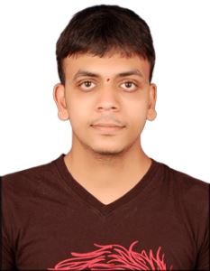

MY RESUME
MANJUNATHA MJ

SHIVAMMOGGA
Mailid:manjunathmj3105@gmail.com
Contact no:8123859520
CAREER OBJECTIVE
To work with an opportunity for growth and career advancement as successful achievements. To provide my best potential and work with a team involved in innovating and implementing new ideas. To gain new skills and use them in further ventures
ACADEMIC CHRONICLES:
| Course |
Board/University |
Institution |
Year of passing |
Percentage |
| Course |
Visvesvaraya
Technological University
|
Jawaharlal Nehru National
College of Engineering, Shimoga
|
2020
(Pursuing)
|
5.62 (SGPA)
(till date)
|
| XII STD |
Department of Pre-
University Education Karnataka
|
Sri Aurobindo Pre-University college
shimoga
|
2016 |
69.7% |
| X STD |
Karnataka Secondary
Education
Examination Board
|
Acharya English medium high school
shimoga
|
2014 |
86.4% |
TECHNICAL SKILLS:
Done internship in vicasin techno solution pvt.ltd on "PYTHON APPLICATION DEVELOPMENT"
Basics of C,C++,Phython
Verilog,VHDL
8086 assembler languge,Arduino IDE,MATLAB
Digital and Analog design(basic)
Adobe photoshop(basic),Keiluvision(intermediate)
PROJECTS:
- Name: Maze Runner(wired)
Description: The model was designed using DPDT switch. It has to cross the hurdles and move along the desired path
- Name: Line follower
Description: Built a bot which follows the Black/white Line Path .The hardware used is IR sensor Audrino Uno R3 and Lipo battery.
- Name: Blogging website
Description: Bulit an blogging website which can be logged in and create ,update,delete posts,maintained with sqlalchmey data base and also reseting the password with email
ACHIEVEMENTS:
Participated in paper presesntation completions JNCE SHIMOGA577201
Participated in robo-race competitions at Amritha college of engineering Banglore, SIT Tumkur
EXTRA-CURRICULUM ACTIVITIES:
Organized workshop on basic electronics, for PU and second year students.
coordinated TECHZONE-2019
LANGUAGES KNOWN:
English
Kannada
Hindi
Telugu
HOBBIES:
Watching movies
Reading books
Watching youtube
PERSONAL DETAILS:
Name:Manjunath MJ
Date of Birth:04th May 1998
Sex:Male
Father’s Name:Janardhan M
Permanent Addres:Manjunathmj Veerabhadraeshwara Nilaya, beside Usha nursing home ravindranagar, usha nursing home Shivamogga - 577203, Karnataka
DECLARATION:
I hereby declare that all the above given information is true and correct to the best of my knowledge and belief
(MJ MANJUNATHA)